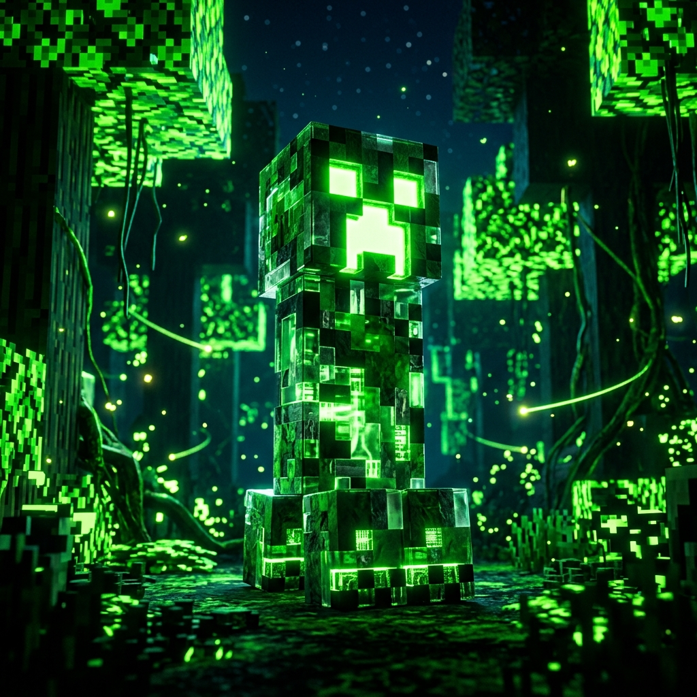
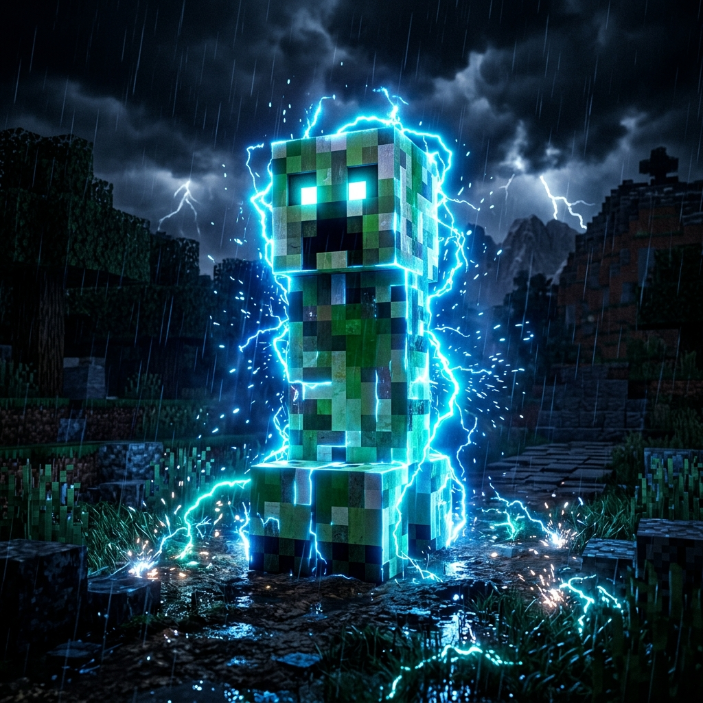
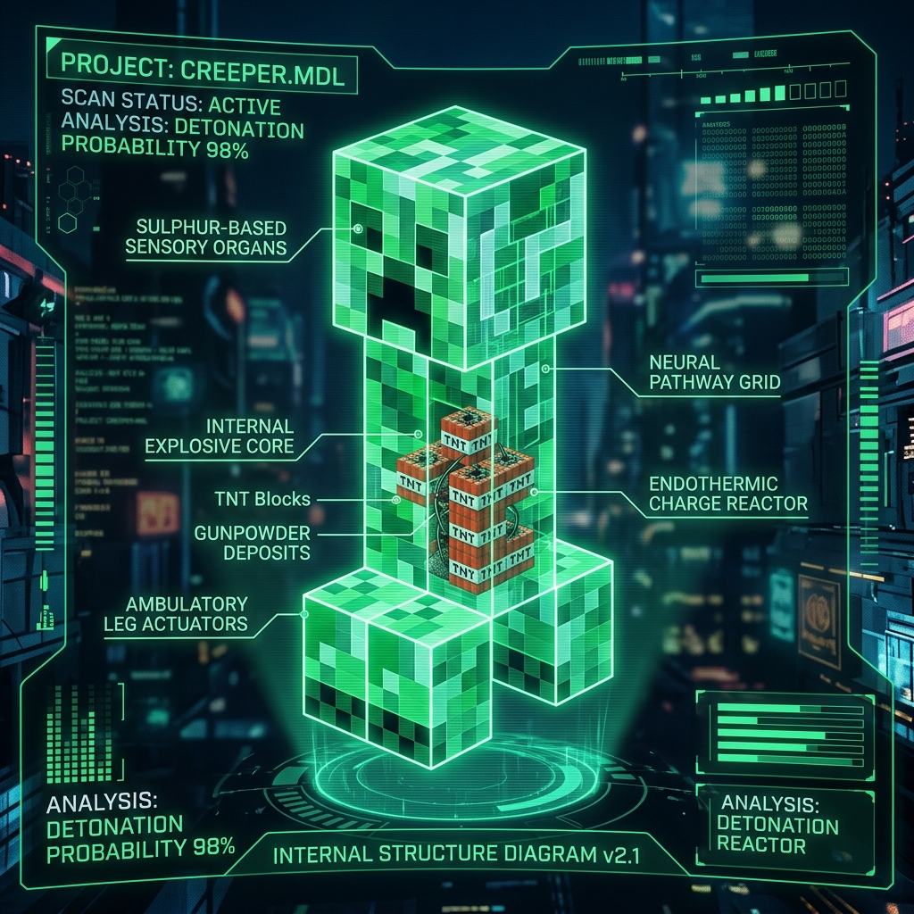
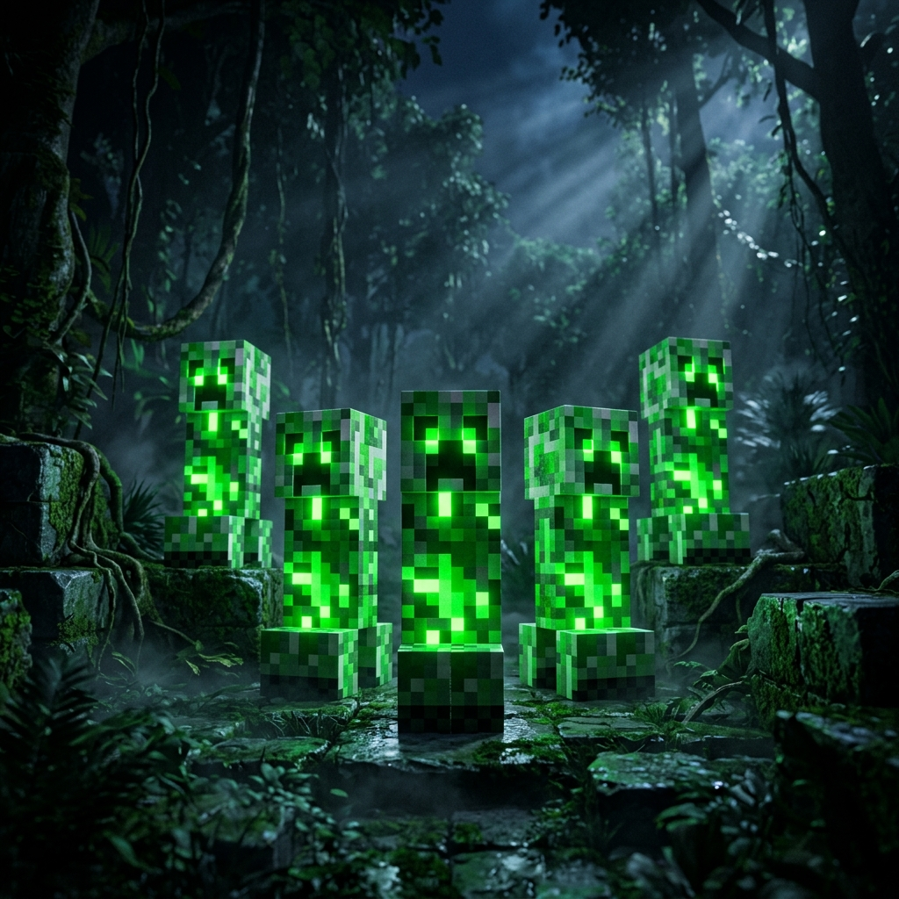
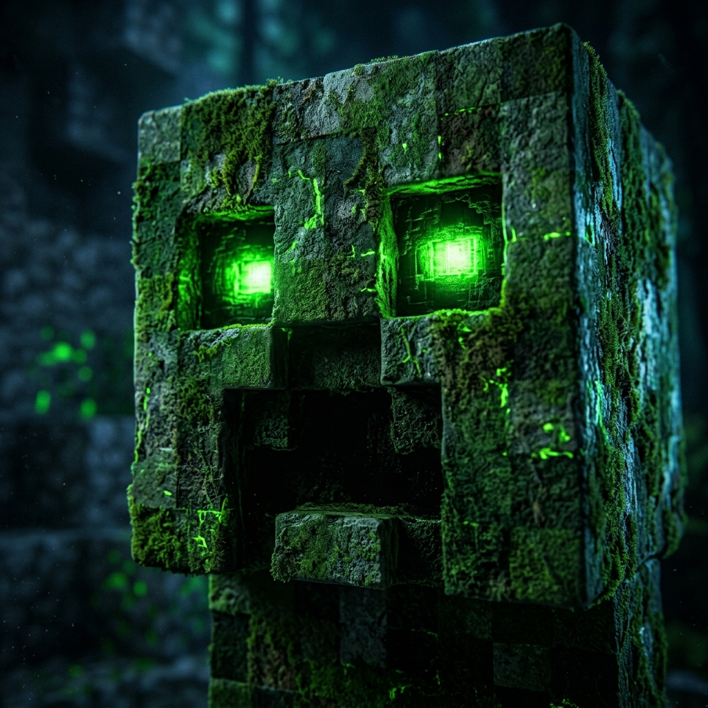
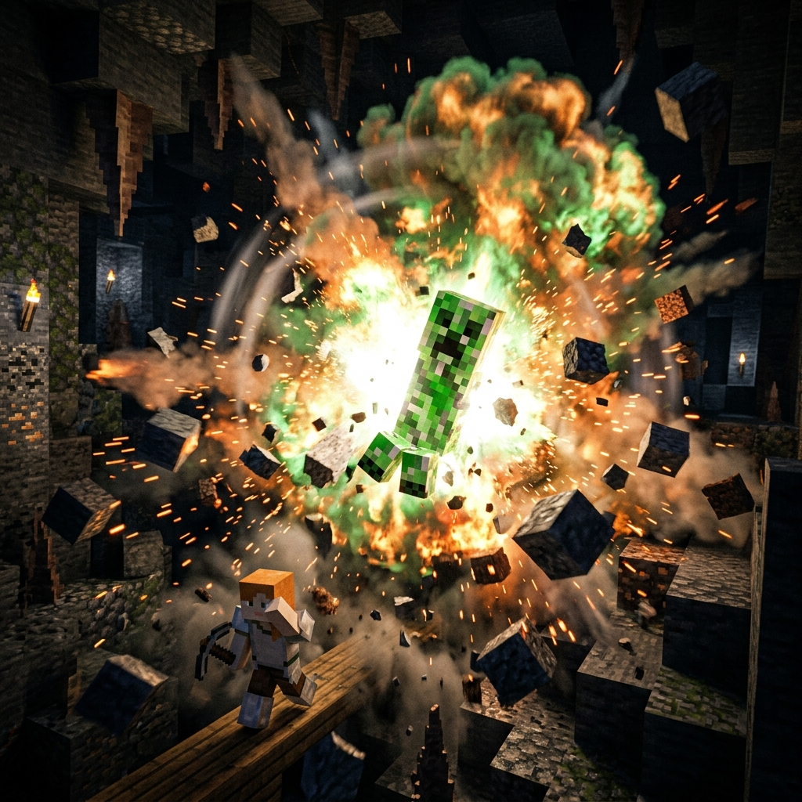

Полная энциклопедия самого опасного, молчаливого и взрывоопасного существа из Minecraft. Данные засекречены. Брифинг начинается.
Гиперреалистичные 3D-рендеры самого опасного существа в истории Minecraft






Полная база данных о Крипере: лут, пластинки, взрывоустойчивость блоков
| Предмет | Без зачарования | Добыча I | Добыча II | Добыча III | Статус |
|---|---|---|---|---|---|
| 💣 Порох (Gunpowder) | 0–2 шт. | 0–3 шт. | 0–4 шт. | 0–5 шт. | Всегда |
| 🪖 Голова Крипера | 0 шт. | 0 шт. | 0 шт. | 0 шт. | Только Charged |
| 🎵 Музыкальная пластинка | — | — | — | — | Убийство скелетом |
| ⚡ Опыт (XP) | 5 опыта | 5 опыта | 5 опыта | 5 опыта | Гарантирован |
| Пластинка | Автор | Длительность | Цвет | Как получить |
|---|---|---|---|---|
| 🎵 13 | C418 | 2:58 | Серый | Крипер убит скелетом |
| 🎵 cat | C418 | 3:05 | Жёлтый | Крипер убит скелетом |
| 🎵 blocks | C418 | 5:45 | Красный | Крипер убит скелетом |
| 🎵 chirp | C418 | 3:05 | Оранжевый | Крипер убит скелетом |
| 🎵 far | C418 | 2:54 | Зелёный | Крипер убит скелетом |
| 🎵 mall | C418 | 3:17 | Синий | Крипер убит скелетом |
| 🎵 mellohi | C418 | 1:36 | Фиолетовый | Крипер убит скелетом |
| 🎵 stal | C418 | 2:30 | Тёмно-серый | Крипер убит скелетом |
| 🎵 strad | C418 | 3:08 | Светло-жёлтый | Крипер убит скелетом |
| 🎵 ward | C418 | 4:11 | Циановый | Крипер убит скелетом |
| 🎵 11 | C418 | 1:11 | Сломанный | Крипер убит скелетом |
| 🎵 wait | C418 | 3:58 | Розовый | Крипер убит скелетом |
| 🎵 Pigstep | Lena Raine | 2:28 | Огненный | Сундук в бастионе |
| Блок | Blast Resistance | Устойчивость | Выживет взрыв Крипера? |
|---|---|---|---|
| 🟣 Обсидиан | 1200 | ✅ Всегда выживет | |
| Усиленный камень | 80 | ✅ Выживет | |
| ⬛ Булыжник / Камень | 6 | ⚠️ Зависит от дистанции | |
| 🟫 Дерево (Древесина) | 2 | 🔶 Вероятно разрушится | |
| 🟡 Песок / Гравий | 0.5 | 💥 Разрушится | |
| 🌊 Вода (жидкость) | 100 | 🛡 Полностью гасит взрыв | |
| 🟩 Трава / Земля | 0.5 | 💥 Немедленно разрушится | |
| 🔷 Стеклянный блок | 0.3 | 💥 Мгновенно разрушится |
| Тип | Здоровье | Макс. урон | Радиус взрыва | Дроп голов | Особенность |
|---|---|---|---|---|---|
| ☢ Обычный крипер | 20 HP (10❤) | 49 (Normal) | 4.0 блока | ❌ Нет | Боится кошек, оцелотов |
| ⚡ Заряженный крипер | 20 HP (10❤) | 127 (Charged) | 5.5 блока | ✅ Всегда | Создаётся ударом молнии |
| 🔵 Снежный крипер | Мод | Мод | Мод | Мод | Только в модах |
| 🔴 Сверхзаряженный | Комманда | Команда | Команда | ✅ | /summon с NBT данными |
| Команда | Эффект | Edition |
|---|---|---|
/summon creeper ~ ~ ~ {powered:1b} |
Заряженный крипер | Java |
/summon creeper ~ ~ ~ {ExplosionRadius:50b} |
Гигантский взрыв (R=50) | Java |
/summon creeper ~ ~ ~ {Fuse:0s} |
Мгновенный взрыв | Java |
/summon creeper ~ ~ ~ {NoAI:1b} |
Неподвижный крипер | Java |
/give @p creeper_head |
Голова крипера в инвентарь | Java + Bedrock |
Рассчитайте урон от взрыва с учётом сложности игры, расстояния, брони и зачарований
Нажмите на точки-маркеры, чтобы узнать о каждой части тела крипера
⚠️ Внимание: возможны визуальные эффекты и звук взрыва
Всё что вы не знали о самом известном мобе в Minecraft
Крипер был создан случайно. Нотч перепутал ширину и высоту при создании модели свиньи. Когда он повернул растянутую модель вертикально — получился крипер. Баг стал иконой.
Крипер боится кошек и оцелотов на расстоянии до 6 блоков. При виде кошки он убегает и не может активировать взрыв. Это единственный природный способ остановить детонацию.
Если в крипера попадает молния, он становится заряженным. Сила взрыва удваивается, а при убийстве других мобов рядом — выпадают их головы. Крайне редкое событие.
Единственный способ получить большинство из 13 музыкальных пластинок — это чтобы скелет убил крипера. Поэтому крипер стал невольным хранителем музыки в мире Minecraft.
Крипер — единственный враг в Minecraft, который не издаёт звуков при движении. Шипение «Тсс...» слышно только при активации взрывателя. Именно поэтому он так опасен сзади.
Голова крипера стала неофициальным логотипом всего Minecraft-сообщества. Она изображена на майках, кружках, плакатах и является самым узнаваемым символом игры наравне с пикселем земли.
Броня с Blast Protection IV на каждом слоте уменьшает урон от взрыва на 64%. В сочетании с расстоянием 4+ блоков — можно пережить даже заряженный взрыв на Hard.
Вода полностью поглощает взрывную волну крипера. Если взрыв происходит под водой — блоки не разрушаются. Это самая эффективная защита от разрушения строений.
Сила взрыва обычного крипера = 3.0, заряженного = 6.0. Для сравнения: динамит = 4.0, кастрюля с зельем ведьмы = 3.0. Заряженный крипер в 2 раза мощнее динамита.
Нарисуй свою версию морды крипера в пиксельном стиле и скачай результат
Выберите цвет из палитры и рисуйте кликом мыши прямо на канвасе. Перетаскивание мыши тоже работает. Нарисуй своего уникального крипера!
Базовая сетка 8×12 пикселей — это официальный размер морды крипера. Первый и последний ряды / столбцы — фон.